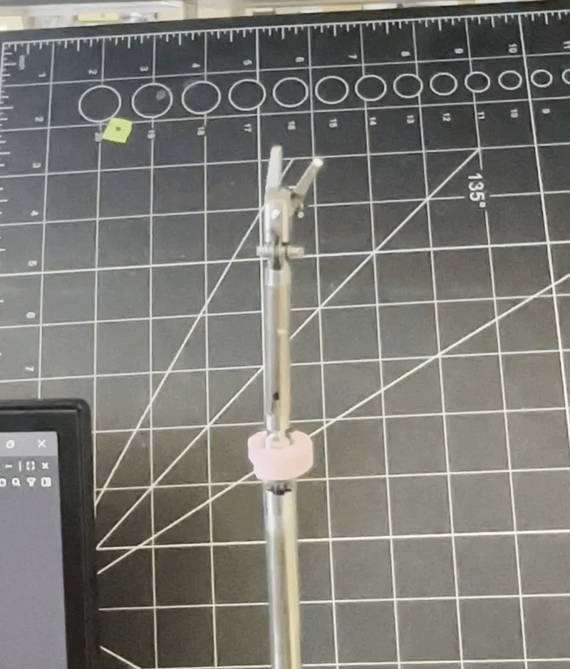
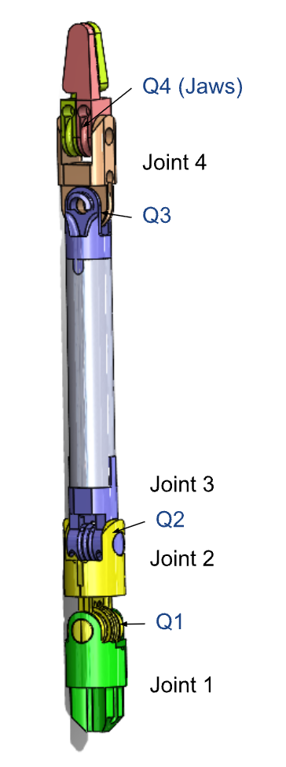
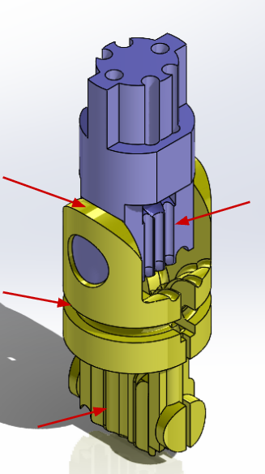
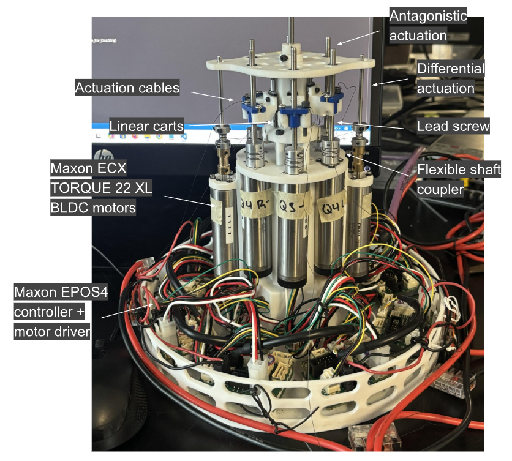
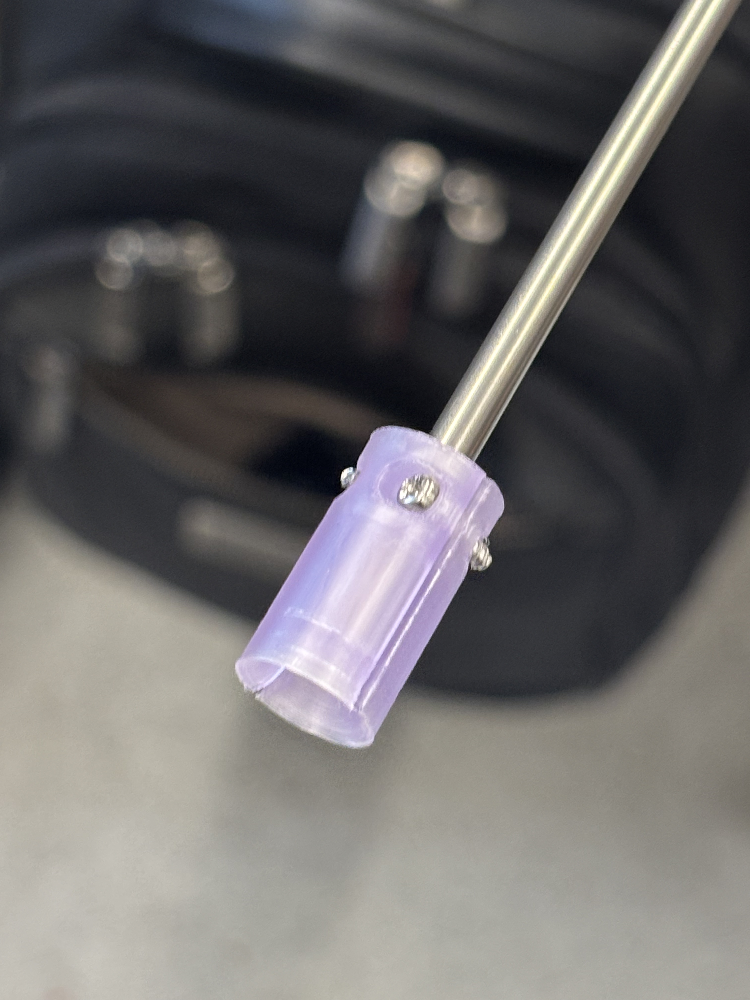
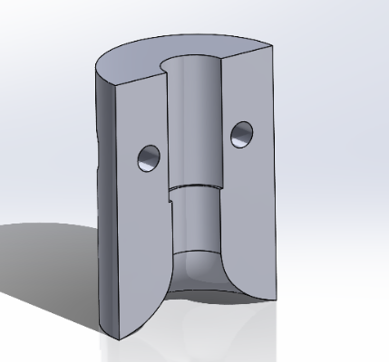
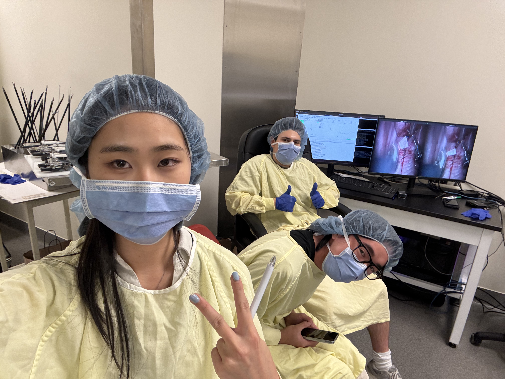

Transoral
Surgical Robot

Development of a miniature surgical tool for transoral robotic surgery at the PCIGITI Lab at SickKids Hospital.

Overview
During my co-op term at the PCIGITI Lab, I worked on the development of a miniature transoral surgical tool designed for use in transoral robotic surgery.
The project involved mechanical design, prototyping, fabrication, testing, and iteration. Through testing of the instrument, I identified issues in the design and made key changes detailed in this page.
The Tooltip
When I took on this project, the tooltip already had an existing design as shown to the right. The cable-actuated instrument has a wrist and an elbow, each with pitch and yaw.
The wrist is 3mm in diameter and the elbow is 4mm in diameter. The whole thing is about the width of 2 toothpicks.


During testing, I determined friction within the joints to be significant and thus redesigned the tooltip to improve performance.
On the right is my new linkage design, the main changes are: replacing circular cable channels with flat channels, increasing the pin length, and adding a groove for a retainer ring.
Actuation Box
The actuation box is the part of the instrument that houses the motors and electronics and is how we move the tooltip. During my time working here, I had to know how to assemble and disassemble the actuation box, and also helped with testing the motors and electronics.

Cable Guide Channels

One mechanical change I made to the design was adding guide channels using tubes fixed to each other in a bundle which is then fixed within the shaft. Cables then pass freely through the guide channels. Previously, thin steel tubes were fixed to the cables via crimping then passed through the shaft. This design change makes assembly much easier as well as ensures relative cable positions are fixed so no entanglement can occur.


Cable Exit Guides
Previously, cables came out of shaft at sharp angles, rubbing against edge of shaft which resulted in breakages. I designed a part that sits at the bottom of the shaft and guides cables to the pulleys with a larger radius, reducing friction and stress concentrations. 2 halves are attached to the shaft using a clamping mechanism.
DVRK TORS Studies
As a sidequest for this project, I also helped with the TORS Davinci studies. The predecessor of the elbow-wrist TORS is a wristed TORS Davinci instrument. This tool is currently in the in-vivo testing phase and I had the opportunity to help with the testing and data collection. Through this, I gained a base understanding of the electrical and mechanical components of the DVRK as well as the software and operating system.
On the right, you can see me teleoperating the Davinci robot. Underneath is a group picture of me and some colleagues during one of the studies.
